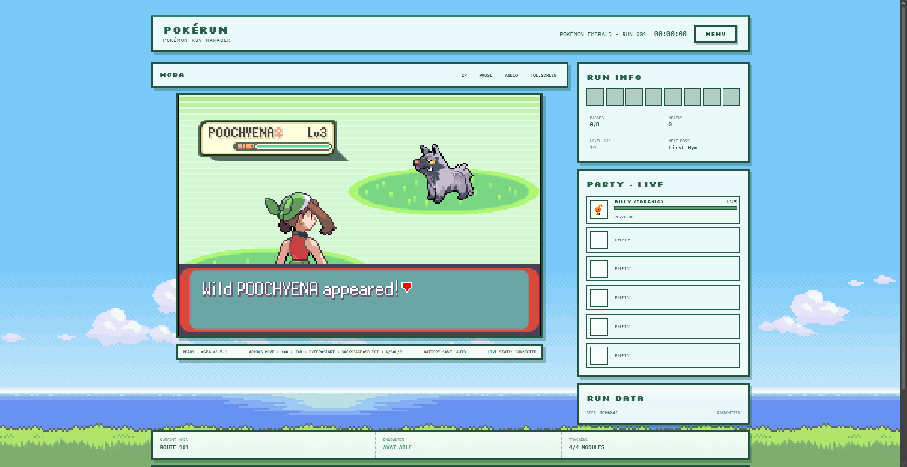
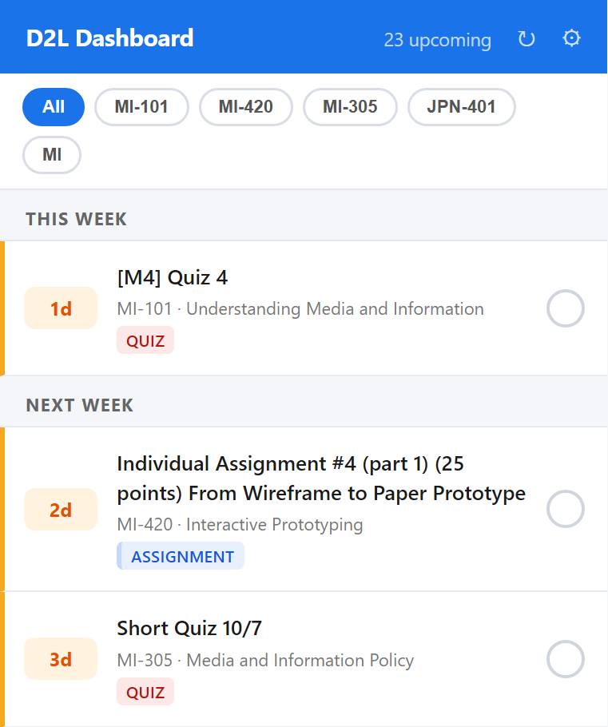

I'm an Information Science student at Michigan State University. I like
learning about web development, AI, and how people actually use technology.
I'm still figuring out what I want to focus on long-term, but I enjoy making
projects that solve small problems or make everyday things easier.
About Me
I'm studying Information Science at Michigan State University. I first got
interested in technology because I thought programming was cool, but I have
also started thinking more about how people use the things that get built.
I also studied abroad in Japan. It gave me a chance to improve my Japanese
and experience a different environment. Learning another language made me
notice how much communication and design can affect the way people understand
information.
Things I'm interested in
Web development
Artificial intelligence
Human-centered technology
Japanese language and culture
Building useful personal projects
Projects
PokéRun

PokéRun running Pokémon Emerald in the browser with custom controls and save
features.
PokéRun is a browser-based Pokémon project I have been building around playing
and tracking Pokémon games in one place. It combines an in-browser emulator with
features for saves, run tracking, game information, and multiplayer.
The project currently supports playing Pokémon Emerald in the browser with
keyboard controls, save syncing, fullscreen, and different game speeds. I have
also been working on multiplayer, where two players can see each other's location
while still keeping their own saves and story progress.
One of my main goals with PokéRun is figuring out how to read game information
from different Pokémon games and turn it into a consistent interface. I have also
been designing the project so more games and features can be added over time.
D2L Assignment Dashboard

A concept for seeing assignments from multiple classes in one view.
I made this because I wanted one place to see what was due instead of
opening every D2L course page separately.
It is a Chrome extension that collects upcoming D2L due dates and puts
them into one organized dashboard.
I wanted the due dates and assignment details to be easier to scan,
especially during busy weeks.
Task Memory API architecture from local requests to database storage and reminder
handling.
Task Memory API is a project I made to keep track of memories, tasks,
events, and reminders through an API.
I used Express, Prisma, and SQLite. It helped me learn more about how an
API can organize data and how to make sure the same reminder does not get
sent twice.
A dashboard concept for organizing Japanese course materials.
I made this because studying Japanese can mean switching between a lot of
different pages and resources. I wanted to make one place for readings,
vocabulary, grammar, kanji practice, and flashcards.
The goal is to make it easier to go through class material without having
to keep jumping between different tabs.